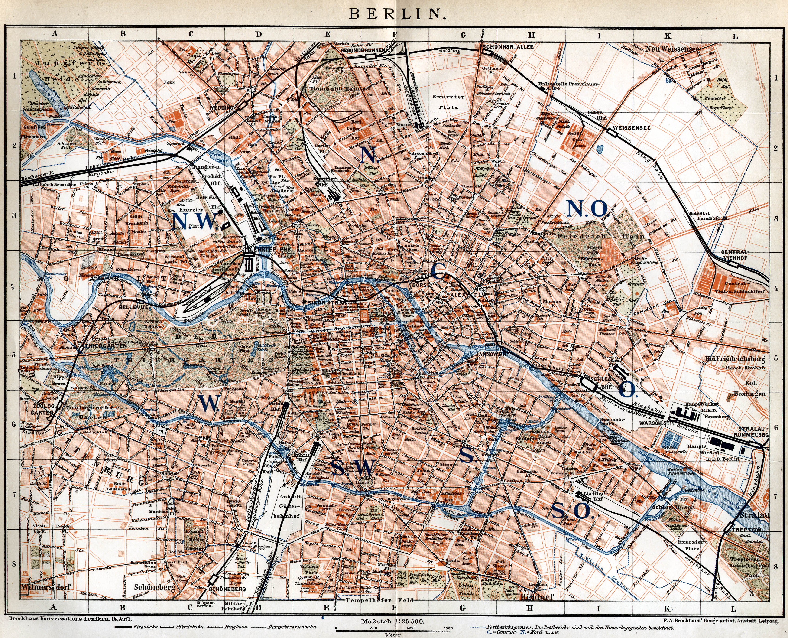

Anwendung (Applikation) zum anzeigen einer Karte (Berlin).

Anwendungs-Dokumentation
Verwendungszweck: Zeigt ein statisches Bild einer Karte von Berlin an.
Funktionsumfang und -beschreibung:
Vollbild aktivieren
- Clicken versetzt die Karteanzeige, in den Vollbildmodus.
- ENTER versetzt die Karteanzeige, in den Vollbildmodus.
- f versetzt die Karteanzeige, in den Vollbildmodus.
Vollbild verlassen
- Clicken versetzt die Karteanzeige, in die Standardansicht.
- ENTER versetzt die Karteanzeige, in die Standardansicht.
- f versetzt die Karteanzeige, in die Standardansicht.